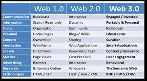
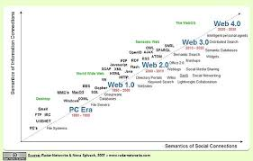

Web Generations
The Web has evolved through generations, each bringing new capabilities and technologies.
| Generation | Era | Focus |
|---|---|---|
| Web 1.0 | 1991-2004 | Static pages |
| Web 2.0 | 2004-present | Interactive, user-generated |
| Web 3.0 | Future | Semantic, decentralised |
Key idea: Each generation added new capabilities to how we use the Web.

